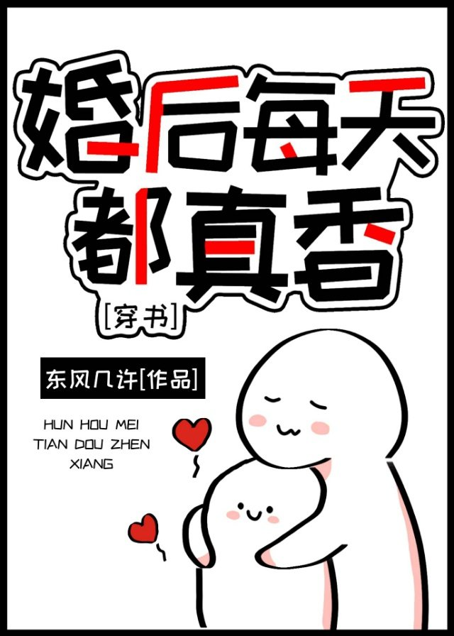

Yu Antong sufre una enfermedad cardíaca congénita y vive con cuidado todos los días. No esperaba que al final moriría en un accidente. En el último momento de su vida, solo lamentó que su corta vida fuera de mal gusto.
Cuando volvió a abrir los ojos, fue transmigrado a un libro y estaba muy feliz de tener un cuerpo sano.
Nada más pasar por allí se iba a casar. ¡Además de eso, su cónyuge es el amante soñado de muchos pasivos en el libro!
Yu Antong se soltó y fue feliz todos los días.
Al principio, Xing Lixuan: Parece diferente a la investigación, ¿qué tipo de familia puede cultivar a este malhechor?
Más tarde, Xing Lixuan: La esposa con la que me casé es muy pegajosa y la forma en que me llama marido siempre me hace sentir incómodo. Pero por alguna razón, no quiero detenerlo.
Finalmente, todos los amigos de Xing Dashao dijeron que ya saben que la esposa de Xing Dashao es buena cocinando, gana mucho dinero y se ve bien. ¡Esperan que en el futuro, Xing Dashao pueda dejar de hablar de su esposa y dejar vivir a los perros solteros!
Xing Lixuan: No sabes lo linda que es mi esposa en casa, pero no diré eso.
Medio año después, Yu Antong se tocó el vientre y se sorprendió: ¡¿Estoy embarazada?! ¡¡Xing Lixuan, llegas aquí!! ¡¡¡Quiero el divorcio!!!
Xing Lixuan: Esposa, ya tenemos un hijo, no provoques problemas.
Yu Antong: Ahora lo lamento, solo pensé que era una novela romántica, ¡pero nunca supe que era una novela sobre un embarazo masculino!